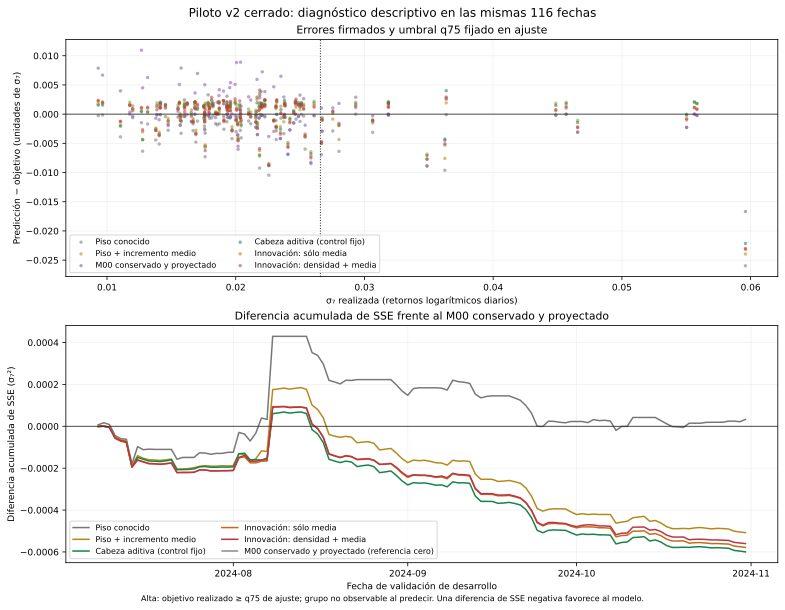

Cierre de v2: regímenes, originalidad y selección#
Piloto completo; criterio de continuación no superado. La arquitectura continúa siendo CNN causal → LSTM unidireccional → atención temporal. El control aditivo queda como referencia de desarrollo por su menor RMSE global. Su resultado no acredita originalidad ni superioridad frente al Top 10.
El informe completo y su auditoría reproducible
conservan el snapshot de resultados
1ca029e,
las predicciones y una revisión focal de novedad. Este cierre no ejecuta
entrenamientos, nuevas inferencias o pruebas de hipótesis.
Ejecución y criterio fijado#
Las tres redes completaron 40 épocas en A100, con 532 ejemplos de ajuste, siete purgados, 116 fechas de validación interna y una semilla. Las mejores épocas fueron 38 para la cabeza aditiva y 39 para las otras dos. La validación se reutilizó para seleccionar época y guiar desarrollo; sus objetivos de siete días se solapan.
El candidato innovation_density_mean obtuvo RMSE 0,00319830, frente a
0,00314461 del control aditivo: quedó 1,707 % peor. Debía mejorar al
menos un 2 % frente al mejor de cinco controles. La heurística no se supera;
la métrica primaria no se cambia por una secundaria que favorezca otra opción.
Comparación por régimen#
Se conserva el percentil 75 del objetivo en ajuste, 0,026577276251655846. Hay 98 fechas bajo ese umbral y 18 con volatilidad realizada mayor o igual. Todas las cifras están en unidades de σ₇ poblacional de retornos logarítmicos diarios, sin anualización.
Variante o control |
RMSE global |
RMSE bajo q75 |
RMSE alto |
|---|---|---|---|
Piso solo |
0,00391683 |
0,00286320 |
0,00736443 |
Piso + incremento medio |
0,00326861 |
0,00222290 |
0,00647677 |
M00 conservado y proyectado |
0,00388067 |
0,00367842 |
0,00483565 |
Cabeza positiva aditiva |
0,00314461 |
0,00229335 |
0,00592383 |
Innovación: sólo media |
0,00317393 |
0,00223427 |
0,00614341 |
Innovación: densidad + media |
0,00319830 |
0,00230460 |
0,00608312 |
El control aditivo mejora 18,97 % la RMSE global frente a M00 proyectado, pero empeora 22,50 % en las 18 fechas altas. Tampoco es el mejor bajo q75: allí la referencia de incremento constante supera a las tres redes nuevas. El contraste con el checkpoint v1 conservado compara recetas completas, incluyendo cabeza, inicialización y precisión; no aísla el efecto de cada cambio.
Estos grupos utilizan el objetivo realizado, desconocido al predecir. Sirven para diagnóstico; no autorizan un selector que escoja modelo usando esa etiqueta futura. No se crea otro modelo ni se inicia otra campaña en este cierre.
Dispersión, colas y casos de error#
La diferencia de SSE aditiva menos M00 es −0,0008105880 bajo q75 y +0,0002107487 en el grupo alto: total −0,0005998393. La mejora global compensa una pérdida en alta volatilidad. Ese grupo representa 55,07 % de la SSE aditiva con sólo 15,52 % de las fechas.
El sesgo medio alto de la aditiva es menos negativo que el de M00, pero su
dispersión residual es mayor. Se verifica MSE = sesgo² + varianza residual
con ddof=0; el peor RMSE alto no se explica por un peor sesgo medio.

La figura muestra todos los puntos. La línea vertical fija q75 y los valores acumulados negativos favorecen al modelo frente a M00. La cola del 8 de agosto de 2024 aporta un caso desfavorable relevante: objetivo 0,05959837, predicción aditiva 0,03745723 y M00 0,04292196. El informe conserva las 696 combinaciones fecha/modelo y muestra los diez mayores errores aditivos, sin eliminar fechas. El piso del objetivo no se interpreta como error irreducible.
Las coberturas nominales del candidato son 104/116 = 89,66 % en total, 90/98 = 91,84 % bajo q75 y 14/18 = 77,78 % en el grupo alto. La proximidad global al 90 % no certifica calibración ni oculta el subgrupo.
Revisión de novedad y recomendación#
La matriz de antecedentes y límites de lectura documenta nueve antecedentes y nueve consultas generales reales. Distingue fuentes recién verificadas y lecturas heredadas. No sustituye una revisión nativa en tres bases ni una verificación humana externa.
Las salidas positivas con piso por muestra, las identidades de varianza, la folded-t y la idea general de mezclar error puntual y Student-NLL tienen antecedentes. La adaptación exacta permanece bajo revisión. Una menor RMSE del control no basta para acreditar R1.
La recomendación es conservar la cabeza aditiva de época 38 como referencia de desarrollo y cerrar la receta actual del candidato con su criterio exploratorio no superado. Se preservan las demás variantes y sus errores. La elección de un modelo original para E3 sigue pendiente, junto a la defensa académica de R2 y la evaluación confirmatoria de R3.
El registro de los pilotos conserva 369,477959639 s de v1 y 186,734699723 s de v2: acumulado 556,212659362 s, con límites 600 s adicionales y 1200 s acumulados. No hay reserva activa ni exceso registrado. No son segundos puros de GPU; el registro incluye sus cargos de ejecución y reserva. El saldo no se reinicia para extender la receta completada.
Descargas y reproducción#

python -m pip install -r requirements-e3-close-cpu.lock.txt
python scripts/e3_audit_innovation.py --check
python -m pytest tests/test_innovation_audit.py -q
Se declara asistencia de IA. Las pruebas y la revisión entre agentes no sustituyen comprensión del código, autoría o verificación humana independiente.